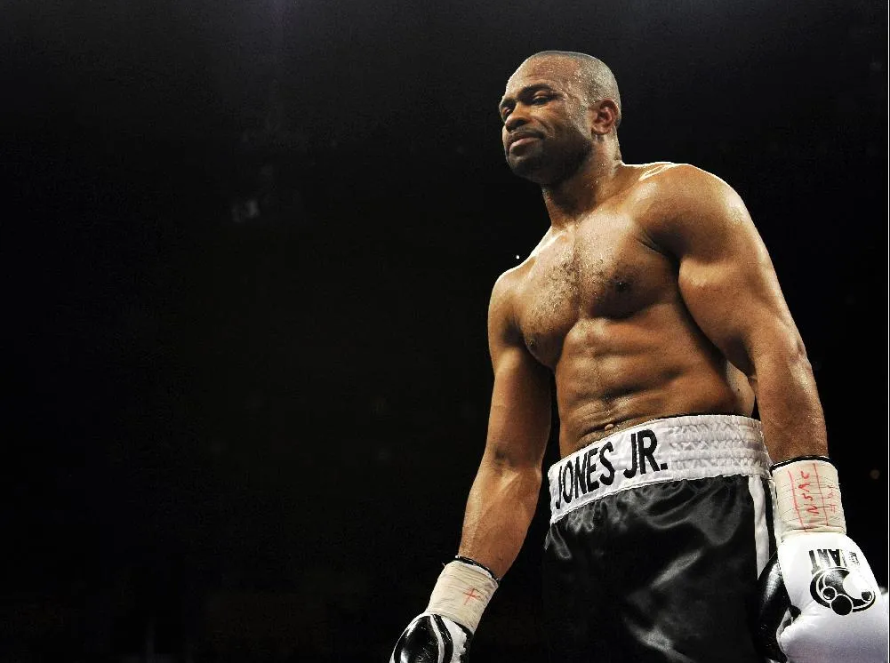
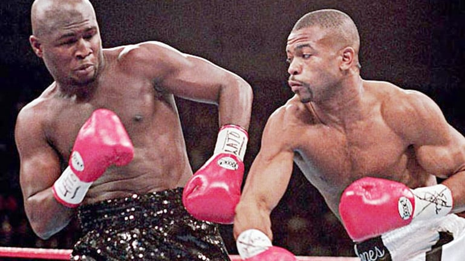
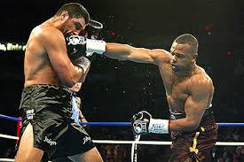
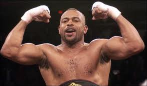

Roy Jones Jr., born in 1969 in Pensacola, Florida, made his professional debut in 1989 at the age of 20. Quickly gaining attention for his extraordinary speed, reflexes, and unorthodox style, Jones became one of the most dominant and versatile fighters in boxing history. His debut marked the start of a career that would see him become a multiple-weight champion and one of the sport's biggest stars.
One of Jones' signature victories came when he defeated James Toney in 1993 for the IBF Middleweight title. Jones demonstrated his brilliant boxing IQ and superior athleticism, earning a unanimous decision over the hard-hitting Toney, solidifying his place among the elite fighters of his generation.
In one of his greatest achievements, Jones moved up to the heavyweight division and defeated John Ruiz in 2003 to become the WBA Heavyweight Champion. This win made him the first fighter in history to win world titles in four different weight classes, showcasing his incredible versatility.
Roy Jones Jr. is widely regarded as one of the greatest pound-for-pound fighters of all time. A multi-weight world champion, Jones held titles in the middleweight, super middleweight, light heavyweight, and heavyweight divisions. His unmatched combination of speed, reflexes, and power revolutionized boxing and made him a global superstar.
Despite his dominance, Jones faced significant challenges throughout his career. His unexpected defeat to Antonio Tarver in 2004 marked the beginning of a decline in his career. Jones also faced struggles with maintaining his weight, and despite his incredible talents, his later years in the sport were marked by diminishing returns and a series of tough losses.
